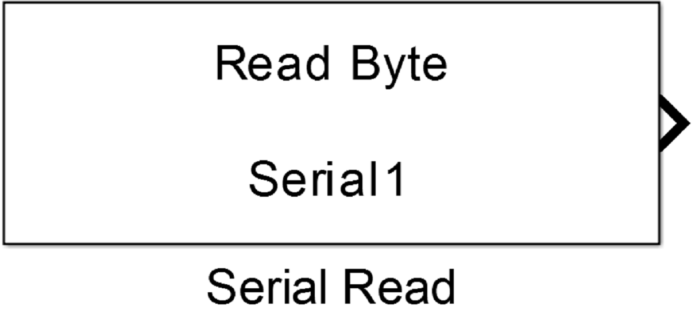
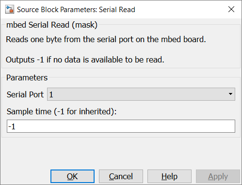

5.1.3. Serial Read Byte
5.1.3.1. Description
Reads one byte from the serial port on the mbed board.
Outputs -1 if no data is available to be read.
{kind=link}
5.1.3.2. Data Type Support
The output port writes values with int32 data types.
5.1.3.3. Parameters Dialog Box
Serial Port
specifies an internal used serial port number. It is used to generate unique instance names when more UARTs are used in the same model and to tie config, read and write blocks together.
Sample Time
specifies the time interval between samples. To inherit the sample time, set this parameter to -1.
5.1.3.4. Example
In the example data from UART input are written back to the output of the same UART. Because the Read Block writes in every step function call a byte to the output port, the value has to be checked. When no byte was transmitted a -1 is written. The switch block handles this, to avoid writing 0xff characters t the UART output.

5.1.3.5. Code Generation
Instance names of mbed classes are created by concatenating model name (, submodelnames), block name and Serial Port number (<Model Name>_(<Subblock Name>_…)<Block Name><Serial Port>). Space and minus characters are substituted by underscore (‘_’) characters.
Step Function
creates the following block in void <Model Name>_step(void) function
if (<instance name>.readable()) {
lvalue = <instance name>.getc();
} else {
lvalue = -1;
}